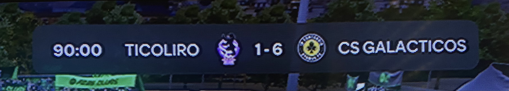

Sobre o Time
Fundado em 2022, o CS Galácticos é um time de eSports dedicado exclusivamente ao modo Pro Clubs do FIFA (EA FC), onde a coletividade e a estratégia são as verdadeiras estrelas. Com um elenco entrosado e focado em evolução constante, buscamos representar com garra e qualidade em cada partida, disputando ligas e campeonatos com o objetivo de levar o nome Galácticos ao topo do cenário virtual.
titulo
- 19° Saturns Cup: Conquistado de forma Invicta pelo clube
- Vice-Campeão 20° Saturns Cup:Chegando Muito perto de conquistar o bicampeonato consecutivo(Perdendo a decisão nas penalidades)
- Vice-Campeão Lion King Cup: Clube foi derrotado na final por 1x0
- Vice-Campeão Lion King Cup: Primeira final do clube,foi derrotado na final por 2x0
Momento Atual
O clube vem de uma seca de titulos importantes há 1 ano. Há 4 meses foi a ultima grande final disputada pelo clube onde foi derrotado por 1x0. Mas ainda segue vencendo o seu "Rival" os ultimos confrontos o clube saiu vitorioso por 6x1 e 3x0
Mídia
Confira as Transmissões dos campeonatos
Contato
Email: csgalacticos@gmail.com
Instagram: @csgalacticos